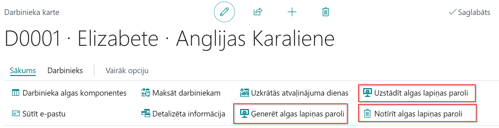

Apskats
Pay Slip Protect ir ELVA risinājums, kas aizsargā darbiniekam e-pastā nosūtīto algas lapiņas PDF failu ar paroli.
Risinājums:
- aizsargā katra darbinieka algas lapiņas PDF failu ar individuālu paroli;
- nosūta paroli atsevišķā e-pastā;
- ļauj izmantot jaunu paroli katrai nosūtīšanai vai periodisku paroli katram darbiniekam;
- ļauj konfigurēt algas lapiņas un paroles e-pastu tēmas un formatētu tekstu;
- ļauj norādīt, uz kuru darbinieka e-pasta adresi sūtīt paroli;
- parāda e-pasta veidņu priekšskatījumu.
Important
Risinājums aizsargā PDF failu, kas tiek izveidots un nosūtīts darbiniekam standarta algas lapiņas e-pasta plūsmā. Manuāli izveidots kopīgs PDF fails ar vairāku darbinieku algas lapiņām netiek aizsargāts ar individuālām parolēm.
Priekšnosacījumi
Lai izmantotu risinājumu:
- jābūt uzstādītam Pay Slip Protect un Latvian Payroll Base;
- Dynamics 365 Business Central jābūt konfigurētam algas lapiņu nosūtīšanas e-pasta kontam scenārijā LVAL Pay Slip;
- darbinieka kartītē jābūt aizpildītai algas lapiņas saņēmēja e-pasta adresei;
- periodiskās paroles politikai jābūt pieejamai datu šifrēšanai.
Datu šifrēšana periodiskajām parolēm
Periodiskā parole tiek glabāta šifrētā Isolated Storage.
- Dynamics 365 Business Central Online (SaaS) vidē datu šifrēšana ir aktivizēta automātiski. Papildu darbības nav nepieciešamas.
- Pārnest vai importēt, eksportēt paroles nav iespējams, tās var tikai izveidot vai gēnerēt.
Risinājuma uzstādīšana
Atveriet lapu Algu uzstādījumi un darbību joslā izvēlieties Algas lapiņas aizsardzība. Iestatījumu lapu var atrast arī, izmantojot meklēšanu.
Lapā Algas lapiņas aizsardzības uzstādījumi norādiet paroles politiku un e-pasta veidnes.

Algas lapiņas paroles politika
Laukā Algas lapiņas paroles politika izvēlieties vienu no iespējām:
| Vērtība | Apraksts |
|---|---|
| Atspējota | PDF fails netiek aizsargāts, un paroles e-pasts netiek sūtīts. Algas lapiņas e-pasta tēmas un teksta veidne joprojām tiek izmantota. |
| Jauna katram e-pastam | Katrai algas lapiņas nosūtīšanai tiek ģenerēta jauna parole. Pēc veiksmīgas algas lapiņas nosūtīšanas tiek nosūtīts atsevišķs paroles e-pasts. |
| Periodiska katram darbiniekam | Darbiniekam tiek glabāta viena šifrēta parole, kuru automātiski atjauno pēc norādītā perioda. Paroles e-pasts tiek nosūtīts tikai pēc paroles izveides vai maiņas. |
Ja paroles aizsardzība ir aktivizēta, aizpildiet:
- Ģenerētās paroles garums. Atļautais garums ir no 16 līdz 50 rakstzīmēm. Šī vērtība ir arī manuāli ievadītas paroles minimālais garums.
- Noklusētā paroles piegāde. Norāda, uz kuru darbinieka e-pasta adresi sūtīt paroli.
- Paroles atjaunošanas periods. Redzams tikai periodiskajai politikai. Piemēram,
<1M>nozīmē vienu mēnesi.
Paroles saņēmēja noteikšana
Laukā Noklusētā paroles piegāde izmanto tās pašas adreses izvēles iespējas, kas pieejamas algas lapiņas nosūtīšanai:
- tikai privātais e-pasts;
- tikai uzņēmuma e-pasts;
- vispirms uzņēmuma e-pasts, pēc tam privātais;
- vispirms privātais e-pasts, pēc tam uzņēmuma.
Pirmo reizi izveidojot risinājuma uzstādījumus, vērtība tiek pārņemta no lauka Algas lapiņas e-pasta opcija lapā Algu uzstādījumi. Turpmāk abi iestatījumi ir neatkarīgi.
Ja izvēlētajai opcijai darbinieka kartītē nevar atrast e-pasta adresi, parole tiek nosūtīta algas lapiņas saņēmējiem. Darbinieka kartītē automātiski tiek atzīmēts lauks Nosūtīts algas lapiņas saņēmējiem (adresi neizdevās noteikt). Kad adrese atkal ir pieejama, atzīme pēc nākamās sekmīgās nosūtīšanas tiek noņemta.
E-pasta veidnes
Risinājuma uzstādījumu lapā var konfigurēt:
- algas lapiņas e-pasta tēmu un tekstu;
- paroles e-pasta tēmu un tekstu politikai Jauna katram e-pastam;
- periodiskās paroles e-pasta tēmu un tekstu politikai Periodiska katram darbiniekam.
E-pasta teksta laukos ir pieejama formatēšanas rīkjosla. Var izmantot, piemēram, treknrakstu, slīprakstu, sarakstus un saites. HTML kods nav jāraksta manuāli.
Periodiskajai politikai izmantojiet veidni, kura nav piesaistīta vienam algas periodam, jo viena parole var palikt derīga vairākus mēnešus. Ja periodiskās paroles tēma vai teksts ir atstāts tukšs, tiek izmantota kopīgā paroles e-pasta veidne.
Aizvietotāji
| Aizvietotājs | Vērtība |
|---|---|
%1 |
Darbinieka pilnais vārds |
%2 |
Algas lapiņas gads |
%3 |
Algas lapiņas mēnesis ciparos, piemēram, 11 |
%4 |
Parole. Izmantojama tikai paroles e-pasta tekstā |
%5 |
Mēneša nosaukums, piemēram, Novembris |
Aizvietotāji %1-%4 tiek ievietoti tieši konfigurētajā tekstā un netiek tulkoti atbilstoši darbinieka valodai. Aizvietotāja %5 mēneša nosaukums tiek veidots tā lietotāja vai darba rindas sesijas valodā, kas nosūta algas lapiņu.
Lapas FactBox E-pasta veidnes priekšskatījums parāda e-pastu piemērus ar paraugvērtībām. Priekšskatījums atjaunojas pēc lauka validēšanas, piemēram, pārejot uz citu lauku.
Periodiskās paroles pārvaldība darbinieka kartītē
Ja izvēlēta politika Periodiska katram darbiniekam, darbinieka kartītē ir redzama grupa Algas lapiņas aizsardzība.

Grupā redzami lauki:
- Algas lapiņas parole uzstādīta. Norāda, vai darbiniekam ir droši saglabāta parole.
- Gaida paroles paziņojumu. Norāda, ka jaunā vai mainītā parole vēl jānosūta darbiniekam.
- Algas lapiņas parole mainīta. Parāda pēdējās paroles izveides vai maiņas laiku.
- Nosūtīts algas lapiņas saņēmējiem (adresi neizdevās noteikt). Norāda, ka paroles saņēmēja adrese netika atrasta un izmantoti algas lapiņas saņēmēji.
Pieejamas šādas darbības:
Ģenerēt algas lapiņas paroli. Izveido jaunu drošu paroli un atzīmē to nosūtīšanai ar nākamo algas lapiņu.
Iestatīt algas lapiņas paroli. Ļauj paroli ievadīt manuāli divas reizes.
Notīrīt algas lapiņas paroli. Dzēš periodisko paroli no šifrētās krātuves. Nākamajā algas lapiņas nosūtīšanas reizē tiek izveidota jauna parole.

Manuāli ievadītai parolei:abos laukos jābūt vienādai;
jāsasniedz uzstādījumos norādītais minimālais garums;
jāsatur lielais burts, mazais burts, cipars un speciālā rakstzīme.
Algas lapiņas nosūtīšana
Nosūtiet algas lapiņu ar standarta e-pasta darbību. Ja vienā algas dokumenta izpildījumā algas lapiņas tiek sūtītas vairākiem darbiniekiem, katram darbiniekam tiek izveidots un aizsargāts atsevišķs PDF fails.
Atkarībā no izvēlētās politikas:
- Atspējota: saņēmējs saņem neaizsargātu PDF, paroles e-pasts netiek sūtīts;
- Jauna katram e-pastam: saņēmējs saņem aizsargātu PDF un atsevišķu e-pastu ar jaunu paroli;
- Periodiska katram darbiniekam: PDF tiek aizsargāts ar darbinieka periodisko paroli. Paroles e-pasts tiek nosūtīts tikai tad, ja parole ir jauna, mainīta vai atjaunota pēc termiņa beigām.
Paroles e-pasts tiek nosūtīts tikai pēc sekmīgas algas lapiņas e-pasta nosūtīšanas. Ja algas lapiņas nosūtīšana neizdodas, parole netiek nosūtīta.